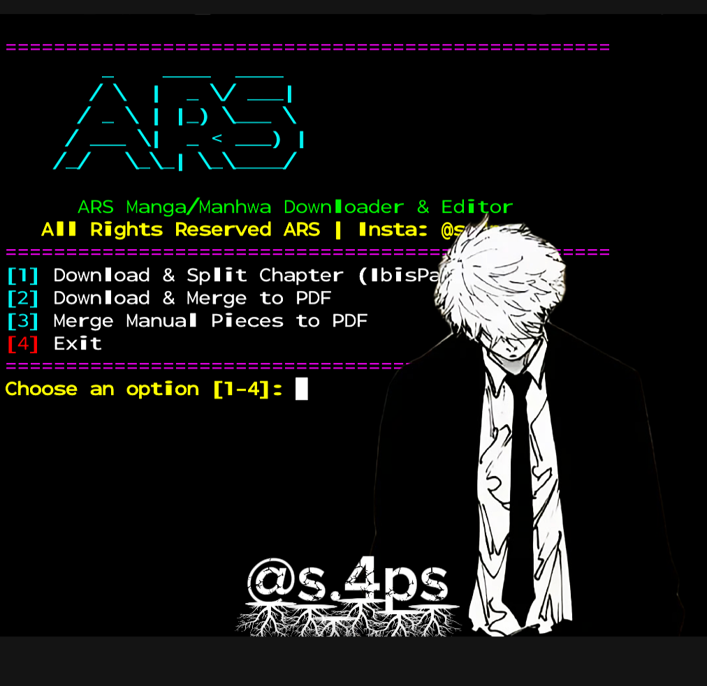

1. تثبيت الحزم: pkg install nodejs imagemagick git
pkg install nodejs imagemagick git
2. إعطاء الصلاحية: chmod +x tools/ars_tool.sh
chmod +x tools/ars_tool.sh
3. تفعيل الأداة: ./tools/ars_tool.sh
./tools/ars_tool.sh